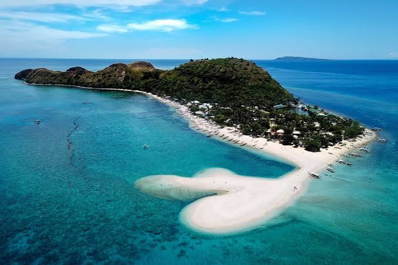
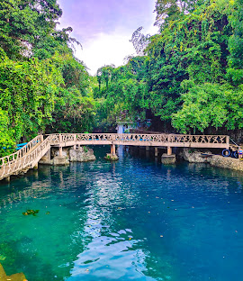
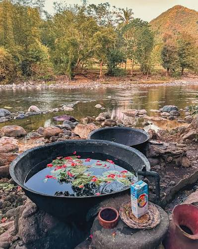

1. Mararison Island
Culasi, Antique
Enjoy scenic island views, beaches, and coastal adventures.
Island AdventureFind your next adventure in the beautiful Province of Antique.

Culasi, Antique
Enjoy scenic island views, beaches, and coastal adventures.
Island Adventure
Pandan, Antique
Enjoy the refreshing natural waters and relaxing surroundings.
Nature & Swimming
Tibiao, Antique
Experience a nature adventure and a scenic waterfall trek.
Hiking & Adventure
Tibiao, Antique
Experience a relaxing hot bath in a traditional large kawa.
Relaxation